The focus of this workshop will be to demonstrate how we can use both SQL and python together in the same workflow to run both analytics and machine learning models on dbt Cloud.
The code complete repository for this quickstart can be found on GitHub.
What you'll need to setup for the lab
- A Snowflake account with ACCOUNTADMIN access
- A GitHub Account
What you will learn
- How to use dbt with Snowflake to build scalable transformations using SQL and Python
- How to use dbt SQL to prepare your data from sources to encoding
- How to train a model in dbt python and use it for future prediction
- How to deploy your full project
What you need to know
- Basic to intermediate SQL and python.
- Basic understanding of dbt fundamentals. We recommend the dbt Fundamentals course if you're interested.
- High level understanding of machine learning processes (encoding, training, testing).
- Simple ML algorithms — we will use logistic regression to keep the focus on the workflow, not algorithms!
What you'll build
- A set of data analytics and prediction pipelines using Formula 1 data leveraging dbt and Snowflake, making use of best practices and code promotion between environments.
- We will create insights for:
- Finding the lap time average and rolling average through the years
- Predicting the position of each driver based on a decade of data
What you'll need
- As inputs, we are going to leverage Formula 1 dataset hosted on a dbt Labs public S3 bucket.
- We will create a Snowflake Stage for our CSV files then use Snowflake's
COPY INTOfunction to copy the data in from our CSV files into tables. - The Formula 1 dataset is available on Kaggle.
- The data is originally compiled from the Ergast Developer API.
- We will create a Snowflake Stage for our CSV files then use Snowflake's
- We will not be building the full pipeline as part of this workshop.
- Instead we will leverage an existing repo, fork it, and focus on our machine learning pipeline.
In this lab we'll be transforming raw Formula 1 data into a consumable form for both analytics and machine learning pipelines. To understand how our data are related, we've included an entity relationship diagram (ERD) of the tables we'll be using today.
Our data rarely ever looks the way we need it in its raw form: we need to join, filter, aggregate, etc. dbt is designed to transform your data and keep your pipeline organized and reliable along the way. We can see from our Formula1 ERD that if we have a major table called results with other tables such as drivers, races, and circuits tables that provide meaningful context to the results table.
You might also see that circuits cannot be directly joined to results since there is no key. This is a typical data model structure we see in the wild: we'll need to first join results and races together, then we can join to circuits. By bringing all this information together we'll be able to gain insights about lap time trends through the years.
Formula 1 ERD:
ERD can also be downloaded for interactive view from S3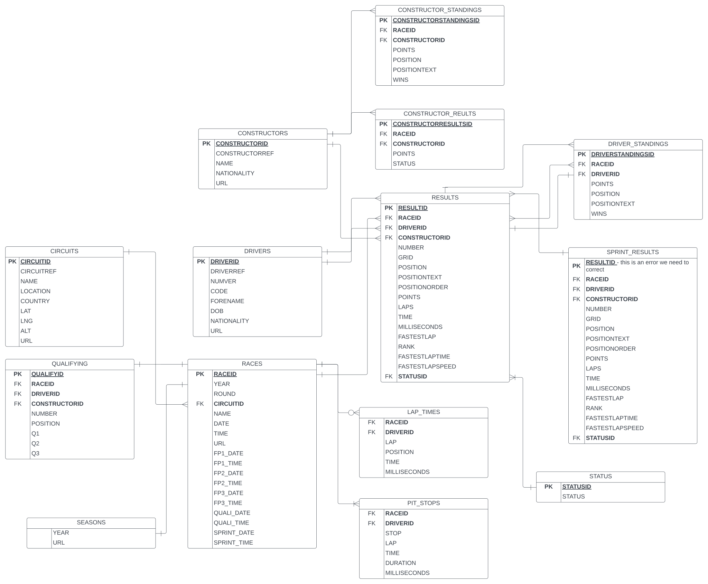
Here's a visual for the data pipeline that we'll be building using dbt! 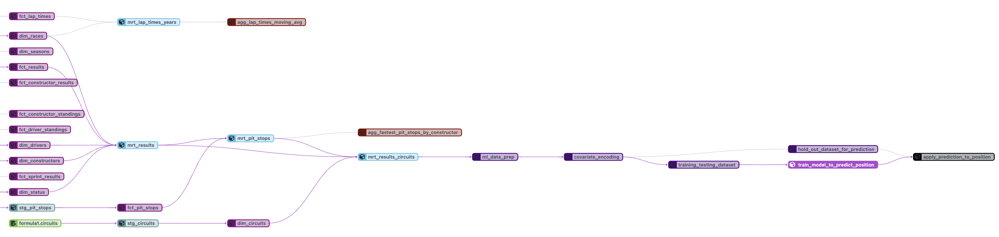
Setup Snowflake trial and email alias
In this section we're going to sign up for a Snowflake trial account and enable Anaconda-provided Python packages.
- Sign up for a Snowflake Trial Account using this form. Ensure that your account is set up using AWS.
- After creating your account and verifying it from your sign-up email, Snowflake will direct you back to the UI called Snowsight.
- To ensure we are working with a clean slate and create a fresh dbt Cloud instance when launching partner connect we will be using email aliasing. What this will look like is <your_email>+<alias_addition>@<your_domain>.com.
- Navigate to your left panel menu ∨ and select Profile.

- You will see your unaliased email you used to sign up for your snowflake trial (screenshot is redacted for privacy).

- Edit the email field to include the alias using the notation <your_email>+dbtsnowpark@<your_domain>.com. Ensure you Save your updated aliased email.

- This should automatically send a re-verification email. In your email simply click the email link to verify your new aliased email, and then you're good to go. If for any reason you did the email was not generated you can navigate back to your Profile and click the link to manually Resend verification email.

- Your verification email will look like the image below. Select Validate your email.

- After you validate your email your screen should look as follows:

- Re-login or refresh your browser window.
To recap, we created this email alias to ensure that later when we launch Partner Connect to spin up a dbt Cloud account that there are no previously existing dbt Cloud accounts and projects that cause issues and complications in setup.
Enable Anaconda Python packages and open new SQL worksheet
- Ensure you are still logged in as the ACCOUNTADMIN.

- Navigate to Admin > Billing & Terms. Click Enable > Acknowledge & Continue to enable Anaconda Python packages to run in Snowflake.
 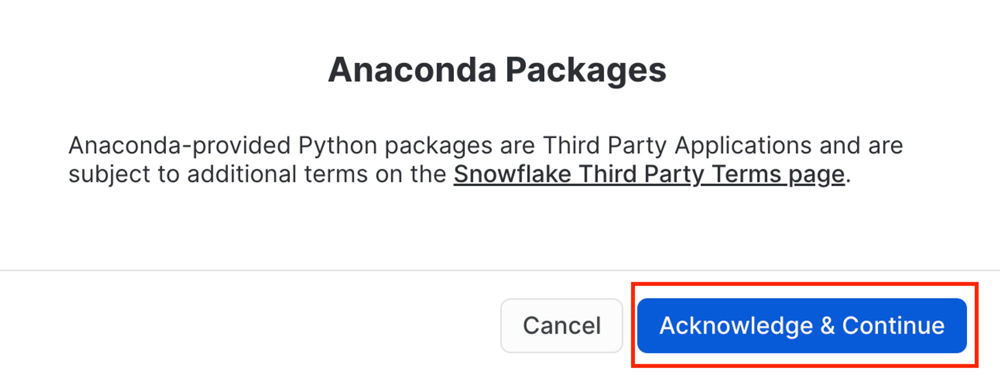
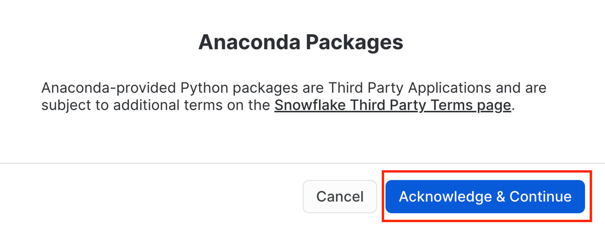 - Finally, navigate back to Worksheets to create a new SQL Worksheet by selecting + then SQL Worksheet in the upper right corner.
We need to obtain our data source by copying our Formula 1 data into Snowflake tables from a public S3 bucket that dbt Labs hosts.
- Your new Snowflake account has a preconfigured warehouse named
COMPUTE_WH. You can check by going under Admin > Warehouses. If for some reason you don't have this warehouse, we can create a warehouse using the following script:create or replace warehouse COMPUTE_WH with warehouse_size=XSMALL - Rename the SQL worksheet by clicking the worksheet name (this is automatically set to the current timestamp) using the 3 dots
...option, then click Rename. Rename the file todata setup scriptsince we will be placing code in this worksheet to ingest the Formula 1 data. Set the context of the worksheet by setting your role as the ACCOUNTADMIN and warehouse as COMPUTE_WH.
- Copy the following code into the main body of the Snowflake SQL worksheet. You can also find this setup script under the
setupfolder in the Git repository. The script is long since it's bringing in all of the data we'll need today! We recommend copying this straight from the github file linked rather than from this workshop UI so you don't miss anything (use Ctrl+A or Cmd+A).
Generally during this lab we'll be explaining and breaking down the queries. We won't be going line by line, but we will point out important information related to our learning objectives!
/*
This is our setup script to create a new database for the Formula1 data in Snowflake.
We are copying data from a public s3 bucket into snowflake by defining our csv format and snowflake stage.
*/
-- create and define our formula1 database
create or replace database formula1;
use database formula1;
create or replace schema raw;
use schema raw;
--define our file format for reading in the csvs
create or replace file format csvformat
type = csv
field_delimiter =','
field_optionally_enclosed_by = '"',
skip_header=1;
--
create or replace stage formula1_stage
file_format = csvformat
url = 's3://formula1-dbt-cloud-python-demo/formula1-kaggle-data/';
-- load in the 8 tables we need for our demo
-- we are first creating the table then copying our data in from s3
-- think of this as an empty container or shell that we are then filling
--CIRCUITS
create or replace table formula1.raw.circuits (
CIRCUIT_ID NUMBER(38,0),
CIRCUIT_REF VARCHAR(16777216),
NAME VARCHAR(16777216),
LOCATION VARCHAR(16777216),
COUNTRY VARCHAR(16777216),
LAT FLOAT,
LNG FLOAT,
ALT NUMBER(38,0),
URL VARCHAR(16777216)
);
-- copy our data from public s3 bucket into our tables
copy into circuits
from @formula1_stage/circuits.csv
on_error='continue';
--CONSTRUCTOR RESULTS
create or replace table formula1.raw.constructor_results (
CONSTRUCTOR_RESULTS_ID NUMBER(38,0),
RACE_ID NUMBER(38,0),
CONSTRUCTOR_ID NUMBER(38,0),
POINTS NUMBER(38,0),
STATUS VARCHAR(16777216)
);
copy into constructor_results
from @formula1_stage/constructor_results.csv
on_error='continue';
--CONSTRUCTOR STANDINGS
create or replace table formula1.raw.constructor_standings (
CONSTRUCTOR_STANDINGS_ID NUMBER(38,0),
RACE_ID NUMBER(38,0),
CONSTRUCTOR_ID NUMBER(38,0),
POINTS NUMBER(38,0),
POSITION FLOAT,
POSITION_TEXT VARCHAR(16777216),
WINS NUMBER(38,0)
);
copy into constructor_standings
from @formula1_stage/constructor_standings.csv
on_error='continue';
--CONSTRUCTORS
create or replace table formula1.raw.constructors (
CONSTRUCTOR_ID NUMBER(38,0),
CONSTRUCTOR_REF VARCHAR(16777216),
NAME VARCHAR(16777216),
NATIONALITY VARCHAR(16777216),
URL VARCHAR(16777216)
);
copy into constructors
from @formula1_stage/constructors.csv
on_error='continue';
--DRIVER STANDINGS
create or replace table formula1.raw.driver_standings (
DRIVER_STANDINGS_ID NUMBER(38,0),
RACE_ID NUMBER(38,0),
DRIVER_ID NUMBER(38,0),
POINTS NUMBER(38,0),
POSITION FLOAT,
POSITION_TEXT VARCHAR(16777216),
WINS NUMBER(38,0)
);
copy into driver_standings
from @formula1_stage/driver_standings.csv
on_error='continue';
--DRIVERS
create or replace table formula1.raw.drivers (
DRIVER_ID NUMBER(38,0),
DRIVER_REF VARCHAR(16777216),
NUMBER VARCHAR(16777216),
CODE VARCHAR(16777216),
FORENAME VARCHAR(16777216),
SURNAME VARCHAR(16777216),
DOB DATE,
NATIONALITY VARCHAR(16777216),
URL VARCHAR(16777216)
);
copy into drivers
from @formula1_stage/drivers.csv
on_error='continue';
--LAP TIMES
create or replace table formula1.raw.lap_times (
RACE_ID NUMBER(38,0),
DRIVER_ID NUMBER(38,0),
LAP NUMBER(38,0),
POSITION FLOAT,
TIME VARCHAR(16777216),
MILLISECONDS NUMBER(38,0)
);
copy into lap_times
from @formula1_stage/lap_times.csv
on_error='continue';
--PIT STOPS
create or replace table formula1.raw.pit_stops (
RACE_ID NUMBER(38,0),
DRIVER_ID NUMBER(38,0),
STOP NUMBER(38,0),
LAP NUMBER(38,0),
TIME VARCHAR(16777216),
DURATION VARCHAR(16777216),
MILLISECONDS NUMBER(38,0)
);
copy into pit_stops
from @formula1_stage/pit_stops.csv
on_error='continue';
--QUALIFYING
create or replace table formula1.raw.qualifying (
QUALIFYING_ID NUMBER(38,0),
RACE_ID NUMBER(38,0),
DRIVER_ID NUMBER(38,0),
CONSTRUCTOR_ID NUMBER(38,0),
NUMBER NUMBER(38,0),
POSITION FLOAT,
Q1 VARCHAR(16777216),
Q2 VARCHAR(16777216),
Q3 VARCHAR(16777216)
);
copy into qualifying
from @formula1_stage/qualifying.csv
on_error='continue';
--RACES
create or replace table formula1.raw.races (
RACE_ID NUMBER(38,0),
YEAR NUMBER(38,0),
ROUND NUMBER(38,0),
CIRCUIT_ID NUMBER(38,0),
NAME VARCHAR(16777216),
DATE DATE,
TIME VARCHAR(16777216),
URL VARCHAR(16777216),
FP1_DATE VARCHAR(16777216),
FP1_TIME VARCHAR(16777216),
FP2_DATE VARCHAR(16777216),
FP2_TIME VARCHAR(16777216),
FP3_DATE VARCHAR(16777216),
FP3_TIME VARCHAR(16777216),
QUALI_DATE VARCHAR(16777216),
QUALI_TIME VARCHAR(16777216),
SPRINT_DATE VARCHAR(16777216),
SPRINT_TIME VARCHAR(16777216)
);
copy into races
from @formula1_stage/races.csv
on_error='continue';
--RESULTS
create or replace table formula1.raw.results (
RESULT_ID NUMBER(38,0),
RACE_ID NUMBER(38,0),
DRIVER_ID NUMBER(38,0),
CONSTRUCTOR_ID NUMBER(38,0),
NUMBER NUMBER(38,0),
GRID NUMBER(38,0),
POSITION FLOAT,
POSITION_TEXT VARCHAR(16777216),
POSITION_ORDER NUMBER(38,0),
POINTS NUMBER(38,0),
LAPS NUMBER(38,0),
TIME VARCHAR(16777216),
MILLISECONDS NUMBER(38,0),
FASTEST_LAP NUMBER(38,0),
RANK NUMBER(38,0),
FASTEST_LAP_TIME VARCHAR(16777216),
FASTEST_LAP_SPEED FLOAT,
STATUS_ID NUMBER(38,0)
);
copy into results
from @formula1_stage/results.csv
on_error='continue';
--SEASONS
create or replace table formula1.raw.seasons (
YEAR NUMBER(38,0),
URL VARCHAR(16777216)
);
copy into seasons
from @formula1_stage/seasons.csv
on_error='continue';
--SPRINT RESULTS
create or replace table formula1.raw.sprint_results (
RESULT_ID NUMBER(38,0),
RACE_ID NUMBER(38,0),
DRIVER_ID NUMBER(38,0),
CONSTRUCTOR_ID NUMBER(38,0),
NUMBER NUMBER(38,0),
GRID NUMBER(38,0),
POSITION FLOAT,
POSITION_TEXT VARCHAR(16777216),
POSITION_ORDER NUMBER(38,0),
POINTS NUMBER(38,0),
LAPS NUMBER(38,0),
TIME VARCHAR(16777216),
MILLISECONDS NUMBER(38,0),
FASTEST_LAP VARCHAR(16777216),
FASTEST_LAP_TIME VARCHAR(16777216),
STATUS_ID NUMBER(38,0)
);
copy into sprint_results
from @formula1_stage/sprint_results.csv
on_error='continue';
--STATUS
create or replace table formula1.raw.status (
STATUS_ID NUMBER(38,0),
STATUS VARCHAR(16777216)
);
copy into status
from @formula1_stage/status.csv
on_error='continue';
- Ensure all the commands are selected before running the query — an easy way to do this is to use Ctrl-A to highlight all of the code in the worksheet. Select run (blue triangle icon). Notice how the dot next to your COMPUTE_WH turns from gray to green as you run the query. The status table is the final table of all 14 tables loaded in.

- Let's unpack that pretty long query we ran into component parts. We ran this query to load in our 14 Formula 1 tables from a public S3 bucket. To do this, we:
- Created a new database called
formula1and a schema calledrawto place our raw (untransformed) data into. - Created a stage to locate our data we are going to load in. Snowflake Stages are locations where data files are stored. Stages are used to both load and unload data to and from Snowflake locations. Here we are using an external stage, by referencing an S3 bucket.
- Created our tables for our data to be copied into. These are empty tables with the column name and data type. Think of this as creating an empty container that the data will then fill into.
- Used the
copy intostatement for each of our tables. We reference our staged location we created and upon loading errors continue to load in the rest of the data. You should not have data loading errors but if you do, those rows will be skipped and Snowflake will tell you which rows caused errors.
- Once the script completes, browse to the left navigation menu. Click on ... button to bring up Refresh button. Click Refresh and you will see the newly created
FORMULA1database show up. Expand the database and explore the different tables you just created and loaded data into in the RAW schema. 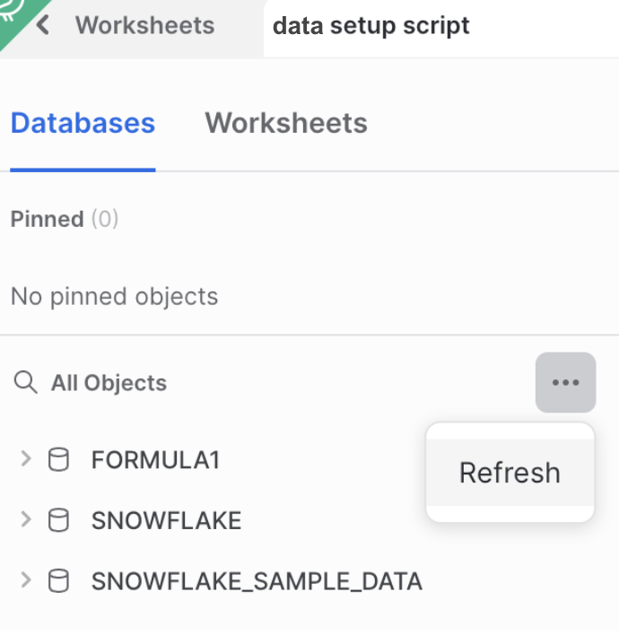 - Now let's take a look at some of our cool Formula 1 data we just loaded up!
- Create a SQL worksheet by selecting the + then SQL Worksheet.

- Navigate to Database > Formula1 > RAW > Tables.
- Query the data using the following code. There are only 77 rows in the circuits table, so we don't need to worry about limiting the amount of data we query.
select * from formula1.raw.circuits - Run the query. From here on out, we'll use the keyboard shortcuts Command-Enter or Control-Enter to run queries and won't explicitly call out this step.
- Review the query results, you should see information about Formula 1 circuits, starting with Albert Park in Australia!
- Ensure you have all 14 tables starting with
CIRCUITSand ending withSTATUS. Now we are ready to connect into dbt Cloud!
We're ready to setup our dbt account!
We are going to be using Snowflake Partner Connect to set up a dbt Cloud account. Using this method will allow you to spin up a fully fledged dbt account with your Snowflake connection and environments already established.
- Navigate out of your SQL worksheet back by selecting home.
- In Snowsight, confirm that you are using the ACCOUNTADMIN role.
- Confirm that your email address contains an email alias.
- Navigate to the Admin > Partner Connect. Find dbt either by using the search bar or navigating the Data Integration. Select the dbt tile.

- You should now see a new window that says Connect to dbt. Select Optional Grant and add the
FORMULA1database. This will grant access for your new dbt user role to the FORMULA1 database. 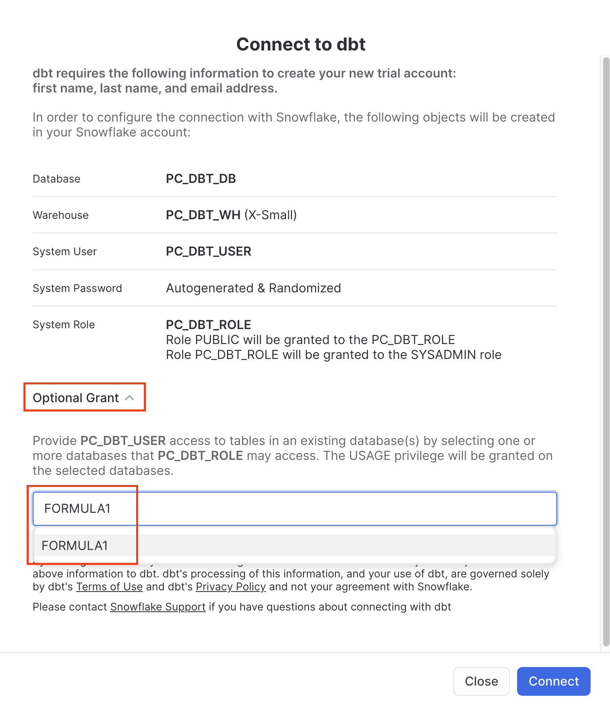 - Ensure the
FORMULA1is present in your optional grant before clicking Connect. This will create a dedicated dbt user, database, warehouse, and role for your dbt Cloud trial.
If you forgot to add the optional grant to the Formula1 database in the previous screenshot, please run these commands:
grant usage on database FORMULA1 to role PC_DBT_ROLE;
grant usage on schema FORMULA1.RAW to role PC_DBT_ROLE;
grant select on all tables in schema FORMULA1.RAW to role PC_DBT_ROLE;
- When you see the Your partner account has been created window, click Activate.

- You should be redirected to a dbt Cloud registration page. Fill out the form using whatever account name you'd like. Make sure to save the password somewhere for login in the future.

- Select Complete Registration. You should now be redirected to your dbt Cloud account, complete with a connection to your Snowflake account, a deployment and a development environment, and a sample job.
Instead of building an entire version controlled data project from scratch, we'll be forking and connecting to an existing workshop github repository in the next step. dbt Cloud's git integration creates easy to use git guardrails. You won't need to know much Git for this workshop. In the future, if you're developing your own proof of value project from scratch, feel free to use dbt's managed repository that is spun up during partner connect.
To keep the focus on dbt python and deployment today, we only want to build a subset of models that would be in an entire data project. To achieve this we need to fork an existing repository into our personal github, copy our forked repo name into dbt cloud, and add the dbt deploy key to our github account. Viola! There will be some back and forth between dbt cloud and GitHub as part of this process, so keep your tabs open, and let's get the setup out of the way!
- Open a new browser tab and navigate to our demo repo by clicking here.
- Fork your own copy of the lab repo. 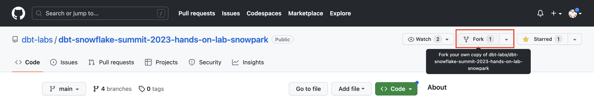
- Add a description if you'd like such as: "learning about dbt Cloud is cool" and Create fork.

- Select the Code button. Choose the SSH option and use the copy button shortcut for our repo. We'll be using this copied path in step 11 in this section.

- Head back over to your dbt Cloud browser tab so we can connect our new forked repository into our dbt Cloud project.
- We'll need to delete the existing connection to the managed repository spun up during Partner Connect before we input our new one. To do this navigate to Settings > Account Settings > Partner Connect Trial.
- This will open the Project Details. Navigate to Repository and click the existing managed repository GitHub connection setup during partner connect.

- In the Repository Details select Edit in the lower right corner. The option to Disconnect will appear, select it. 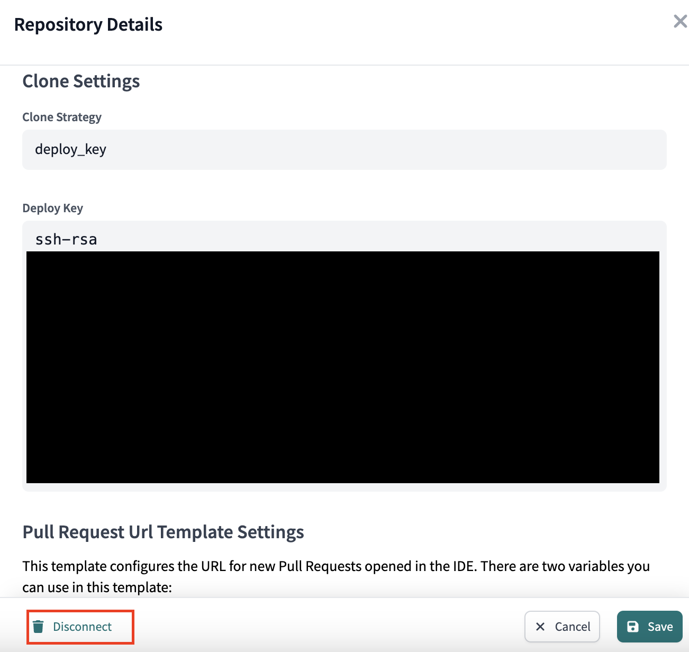
- Confirm disconnect.

- Within your Project Details you should have the option to Configure Repository.

- After deleting our partner connect managed repository, we should see New Repository. Select Git Clone. Input the repository by pasting what you copied from GitHub in step 4 above into the Repository parameter and clicking Import. 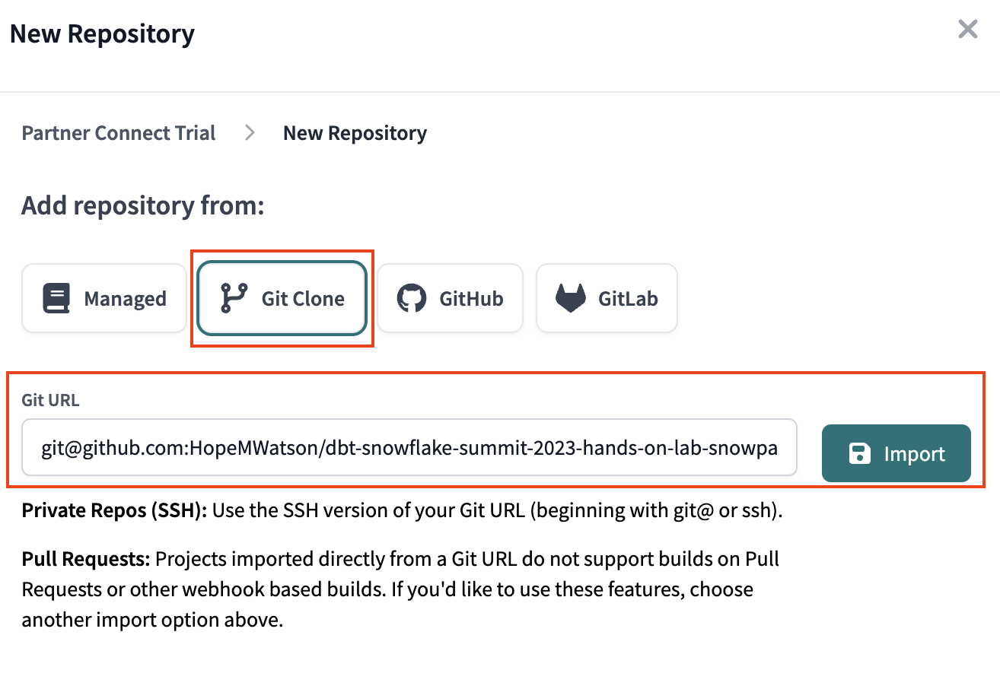
- We can see we successfully made the connection to our forked GitHub repo.

If you tried to start developing onto of this repo right now, we'd get permissions errors. So we need to give dbt Cloud write access.
- Click on your git cloned repository link. dbt Cloud generated a deploy key to link the development we do in dbt cloud back to our GitHub repo. Copy the deploy key starting with ssh-rsa followed by a long hash key (full key hidden for privacy). 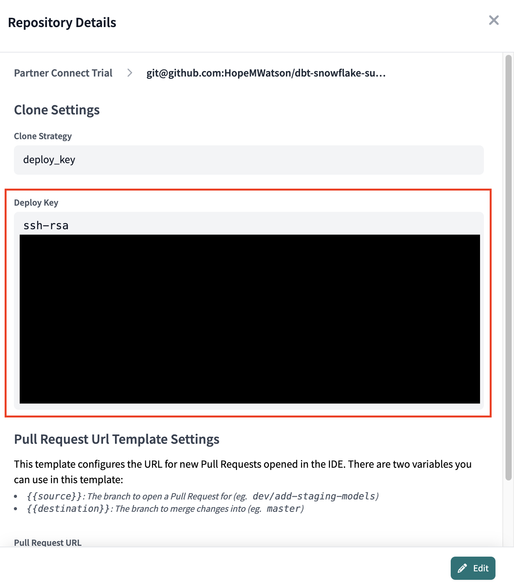
- Phew almost there! Navigate back to GitHub again.
- Ensure you're in your forked repo. Navigate to your repo Settings

- Go to Deploy keys.

- Select Add deploy key.

- Give your deploy key a title such as
dbt Cloud python snowpark. Paste the ssh-rsa deploy key we copied from dbt Cloud into the Key box. Be sure to enable Allow write access. Finally, Add key. Your deploy key has been created. We won't have to come back to again GitHub until the end of our workshop. 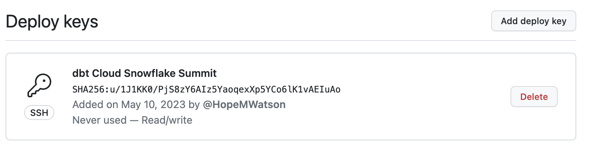
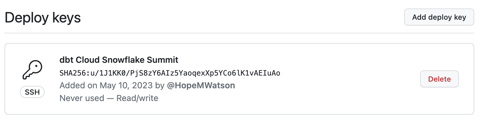 - Head back over to dbt cloud. Navigate to Develop.

- Run "dbt deps"

- Since we're bringing in an existing project, your root folder should now say
dbt-python-hands-on-lab-snowpark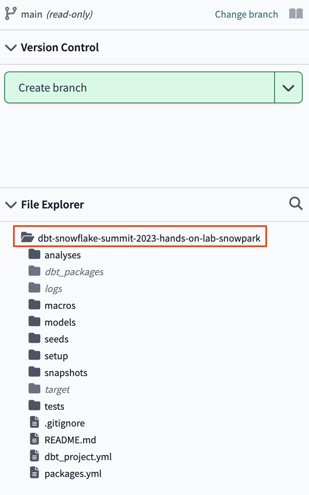
Alas, now that our setup work is complete, time get a look at our production data pipeline code!
dbt Cloud's IDE will be our development space for this workshop, so let's get familiar with it. Once we've done that we'll run the pipeline we imported from our forked repo.
- There are a couple of key features to point out about the IDE before we get to work. It is a text editor, an SQL and Python runner, and a CLI with Git version control all baked into one package! This allows you to focus on editing your SQL and Python files, previewing the results with the SQL runner (it even runs Jinja!), and building models at the command line without having to move between different applications. The Git workflow in dbt Cloud allows both Git beginners and experts alike to be able to easily version control all of their work with a couple clicks.

- In the file tree, click on the magnifying glass icon next to the File Explorer on the left sidebar and type in hold_out_dataset_for_prediction.py. Click the Lineage tab. To make it full screen click the viewfinder icon. Play around with the nodes being shown by removing the 2 in front or behind of
2+hold_out_dataset_for_prediction+2and updating the graph.
- Explore the DAG for a few minutes to understand everything we've done to our pipeline along the way. This includes: cleaning up and joining our data, machine learning data prep, variable encoding, and splitting the datasets. We'll go more in-depth in next steps about how we brought in raw data and then transformed it, but for now get an overall familiarization.
 You can view the code in each node of the DAG by selecting it and navigating out of the full screen. You can read the code on the scratchpad.
You can view the code in each node of the DAG by selecting it and navigating out of the full screen. You can read the code on the scratchpad. - Let's run the pipeline we imported from our forked repo. Type
dbt buildinto the command line and select Enter on your keyboard. When the run bar expands you'll be able to see the results of the run, where you should see the run complete successfully. To understand more about what the dbt build syntax is running check out the documentation.
To understand more about what the dbt build syntax is running check out the documentation. - You can look at the run results of each model to see the code that dbt compiles and sends to Snowflake for execution. Select the arrow beside a model >. Click Details and view the ouput. We can see that dbt automatically generates the DDL statement and is creating our models in our development schema (i.e.
dbt_hwatson).
- Now let's switch over to a new browser tab on Snowflake to confirm that the objects were actually created. Click on the three dots ... above your database objects and then Refresh. Expand the PC_DBT_DB database and you should see your development schema. Select the schema, then Tables and Views. Now you should be able to see many models we created from our forked repo.

We did a lot upstream in our forked repo and we'll explore it at a high level of how we did that before moving on to machine learning model training and prediction in dbt cloud.
We brought a good chunk of our data pipeline in through our forked repo to lay a foundation for machine learning. In the next couple steps we are taking time to review how this was done. That way when you have your own dbt project you'll be familiar with the setup! We'll start with the dbt_project.yml, sources, and staging.
dbt_project.yml
- Select the
dbt_project.ymlfile in the root directory the file explorer to open it. What are we looking at here? Every dbt project requires adbt_project.ymlfile — this is how dbt knows a directory is a dbt project. The dbt_project.yml file also contains important information that tells dbt how to operate on your project. - Your code should as follows:
name: 'snowflake_python_workshop' version: '1.5.0' require-dbt-version: '>=1.3.0' config-version: 2 # This setting configures which "profile" dbt uses for this project. profile: 'default' # These configurations specify where dbt should look for different types of files. # The `source-paths` config, for example, states that models in this project can be # found in the "models/" directory. You probably won't need to change these! model-paths: ["models"] analysis-paths: ["analyses"] test-paths: ["tests"] seed-paths: ["seeds"] macro-paths: ["macros"] snapshot-paths: ["snapshots"] target-path: "target" # directory which will store compiled SQL files clean-targets: # directories to be removed by `dbt clean` - "target" - "dbt_packages" models: snowflake_python_workshop: staging: +docs: node_color: "CadetBlue" marts: +materialized: table aggregates: +docs: node_color: "Maroon" +tags: "bi" core: +materialized: table +docs: node_color: "#800080" ml: +materialized: table prep_encoding_splitting: +docs: node_color: "Indigo" training_and_prediction: +docs: node_color: "Black" - The key configurations to point out in the file with relation to the work that we're going to do are in the
modelssection.require-dbt-version— Tells dbt which version of dbt to use for your project. We are requiring 1.3.0 and any newer version to run python models and node colors.materialized— Tells dbt how to materialize models when compiling the code before it pushes it down to Snowflake. All models in themartsfolder will be built as tables.tags— Applies tags at a directory level to all models. All models in theaggregatesfolder will be tagged asbi(abbreviation for business intelligence).
- Materializations are strategies for persisting dbt models in a warehouse, with
tablesandviewsbeing the most commonly utilized types. By default, all dbt models are materialized as views and other materialization types can be configured in thedbt_project.ymlfile or in a model itself. It's very important to note Python models can only be materialized as tables or incremental models. Since all our Python models exist undermarts, the following portion of ourdbt_project.ymlensures no errors will occur when we run our Python models. Starting with dbt version 1.4, Python files will automatically get materialized as tables even if not explicitly specified.marts: +materialized: table
Cool, now that dbt knows we have a dbt project we can view the folder structure and data modeling.
Folder structure
dbt Labs has developed a project structure guide that contains a number of recommendations for how to build the folder structure for your project. These apply to our entire project except the machine learning portion - this is still relatively new use case in dbt without the same established best practices.
Do check out that guide if you want to learn more. Right now we are going to organize our project using the following structure:
- sources — This is our Formula 1 dataset and it will be defined in a source YAML file. Nested under our Staging folder.
- staging models — These models have a 1:1 with their source table and are for light transformation (renaming columns, recasting data types, etc.).
- core models — Fact and dimension tables available for end user analysis. Since the Formula 1 is pretty clean demo data these look similar to our staging models.
- marts models — Here is where we perform our major transformations. It contains the subfolder:
- aggregates
- ml :
- prep_encoding_splitting
- training_and_prediction (we'll be creating this folder later — it doesn't exist yet )
Your folder structure should look like (make sure to expand some folders if necessary): 
Remember you can always reference the entire project in GitHub to view the complete folder and file strucutre.
In any data project we follow the process of starting with raw data, cleaning and transforming it, and then gaining insights. In this step we'll be showing you how to bring raw data into dbt and create staging models. The steps of setting up sources and staging models were completed when we forked our repo, so we'll only need to preview these files (instead of build them).
Sources allow us to create a dependency between our source database object and our staging models which will help us when we look at data-lineage later. Also, if your source changes database or schema, you only have to update it in your f1_sources.yml file rather than updating all of the models it might be used in.
Staging models are the base of our project, where we bring all the individual components we're going to use to build our more complex and useful models into the project. Staging models have a 1:1 relationship with their source table and are for light transformation steps such as renaming columns, type casting, basic computations, and categorizing data.
Since we want to focus on dbt and Python in this workshop, check out our sources and staging docs if you want to learn more (or take our dbt Fundamentals course which covers all of our core functionality).
Creating Sources
- Open the file called
f1_sources.ymlwith the following file path:models/staging/formula1/f1_sources.yml. - You should see the following code that creates our 14 source tables in our dbt project from Snowflake:

- dbt makes it really easy to:
- declare sources
- provide testing for data quality and integrity with support for both generic and singular tests
- create documentation using descriptions where you write code
Now that we are connected into our raw data let's do some light transformations in staging.
Staging
- Let's view two staging models that we'll be using to understand lap time trends through the years.
- Open
stg_lap_times.with lap_times as (select * from {{ source('formula1', 'lap_times') }}), renamed as ( select race_id as race_id, driver_id as driver_id, lap, "POSITION" as driver_position, "TIME" as lap_time_formatted, {{ convert_laptime("lap_time_formatted") }} as official_laptime, milliseconds as lap_time_milliseconds from lap_times ) select {{ dbt_utils.generate_surrogate_key(["race_id", "driver_id", "lap"]) }} as lap_times_id, * from renamed - Review the SQL code. We see renaming columns using the alias in addition to reformatting using a jinja code in our project referencing a macro. At a high level a macro is a reusable piece of code and jinja is the way we can bring that code into our SQL model. Datetimes column formatting is usually tricky and repetitive. By using a macro we introduce a way to systematic format times and reduce redunant code in our Formula 1 project. Select </> Compile once its finished view the Compiled Code tab. 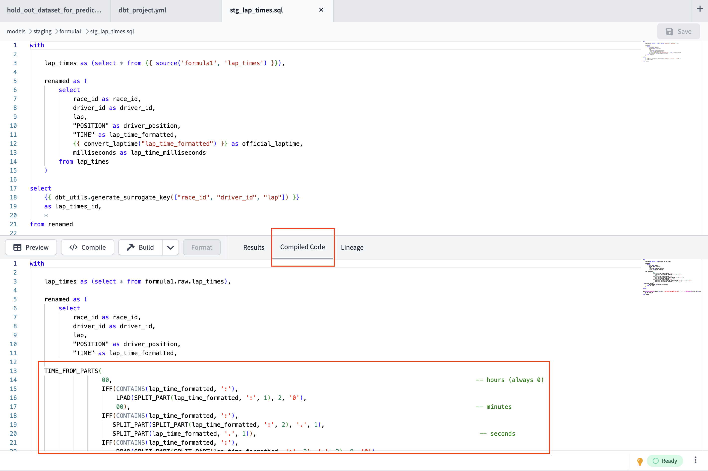
- Now click Preview — look how pretty and human readable our
official_laptimecolumn is! - Feel free to view our project macros under the root folder
macrosand look at the code for our convert_laptime macro in theconvert_laptim.sqlfile. - We can see the reusable logic we have for splitting apart different components of our lap times from hours to nanoseconds. If you want to learn more about leveraging macros within dbt SQL, check out our macros documentation.
You can see for every source table, we have a staging table. Now that we're done staging our data it's time for transformation.
dbt got it's start in being a powerful tool to enhance the way data transformations are done in SQL. Before we jump into python, let's pay homage to SQL.
SQL is so performant at data cleaning and transformation, that many data science projects "use SQL for everything you can, then hand off to python" and that's exactly what we're going to do.
Fact and dimension tables
Dimensional modeling is an important data modeling concept where we break up data into "facts" and "dimensions" to organize and describe data. We won't go into depth here, but think of facts as "skinny and long" transactional tables and dimensions as "wide" referential tables. We'll preview one dimension table and be building one fact table.
- Create a new branch so we can build new models (our main branch is protected as read-only in dbt Cloud). Name your branch
snowpark-python-workshop.

- Navigate in the file tree to models > marts > core > dim_races.
- Preview the data. We can see we have the
RACE_YEARin this table. That's important since we want to understand the changes in lap times over years. So we now knowdim_racescontains the time column we need to make those calculations. - Create a new file within the core directory core > ... > Create file. 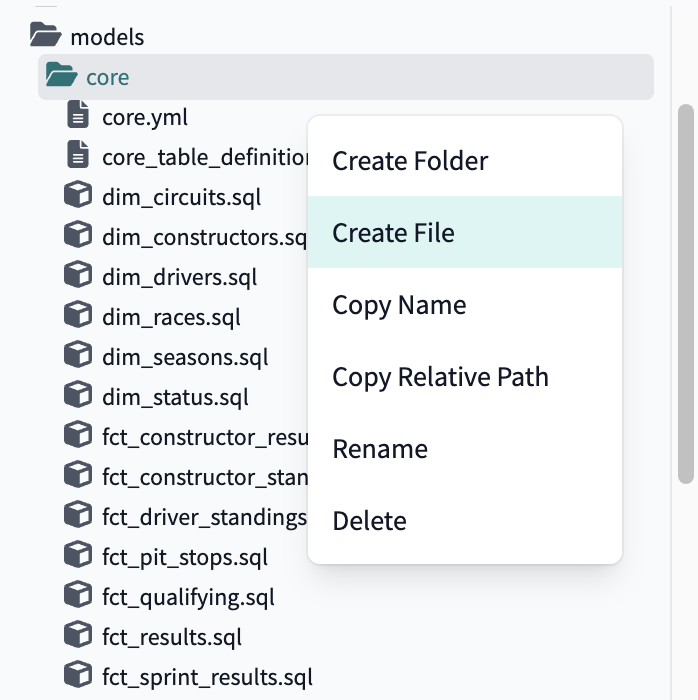
- Name the file
fct_lap_times.sql.
- Copy in the following code and save the file (Save or Ctrl+S):
with lap_times as ( select {{ dbt_utils.generate_surrogate_key(['race_id', 'driver_id', 'lap']) }} as lap_times_id, race_id as race_id, driver_id as driver_id, lap as lap, driver_position as driver_position, lap_time_formatted as lap_time_formatted, official_laptime as official_laptime, lap_time_milliseconds as lap_time_milliseconds from {{ ref('stg_lap_times') }} ) select * from lap_times - Our
fct_lap_timesis very similar to our staging file since this is clean demo data. In your real world data project your data will probably be messier and require extra filtering and aggregation prior to becoming a fact table exposed to your business users for utilizing. - Use the UI Build (buttom with hammer icon) to create the
fct_lap_timesmodel.
Now we have both dim_races and fct_lap_times separately. Next we'll to join these to create lap trend analysis through the years.
Marts tables
Marts tables are where everything comes together to create our business-defined entities that have an identity and purpose. We'll be joining our dim_races and fct_lap_times together.
- Create a new file under your marts folder called
mrt_lap_times_years.sql. - Copy and Save the following code:
with lap_times as ( select * from {{ ref('fct_lap_times') }} ), races as ( select * from {{ ref('dim_races') }} ), expanded_lap_times_by_year as ( select lap_times.race_id, driver_id, race_year, lap, lap_time_milliseconds from lap_times left join races on lap_times.race_id = races.race_id where lap_time_milliseconds is not null ) select * from expanded_lap_times_by_year - Our dataset contains races going back to 1950, but the measurement of lap times begins in 1996. Here we join our datasets together use our
whereclause to filter our races prior to 1996, so they have lap times. - Execute the model using Build.
- Preview your new model. We have race years and lap times together in one joined table so we are ready to create our trend analysis.
- It's a good time to commit the 2 new models we created in our repository. Click Commit and sync and add a commit message.


Now that we've joined and denormalized our data we're ready to use it in python development.
This step is optional for this quickstart to give a better feel for working with python directly in Snowflake. To see how to implement this in dbt Cloud, you may skip to the next section.
Now that we've transformed data using SQL let's write our first python code and get insights about lap time trends. Snowflake python worksheets are excellent for developing your python code before bringing it into a dbt python model. Then once we are settled on the code we want, we can drop it into our dbt project.
Python worksheets in Snowflake are a dynamic and interactive environment for executing Python code directly within Snowflake's cloud data platform. They provide a seamless integration between Snowflake's powerful data processing capabilities and the versatility of Python as a programming language. With Python worksheets, users can easily perform data transformations, analytics, and visualization tasks using familiar Python libraries and syntax, all within the Snowflake ecosystem. These worksheets enable data scientists, analysts, and developers to streamline their workflows, explore data in real-time, and derive valuable insights from their Snowflake data.
- Head back over to Snowflake.
- Open up a Python Worksheet. The boilerplate example code when you first create a Python worksheet is fetching
information_schema.packagesavailable, filtering on columnlanguage = ‘python', and returning that as dataframe, which is what gets shown in result (next step).

- Ensure you are in your development database and schema (i.e. PC_DBT_DB and DBT_HWATSON) and run the Python worksheet (Ctrl+A and Run). The query results represent the many (about 5,400) packages snowpark for python supports that you can leverage!
 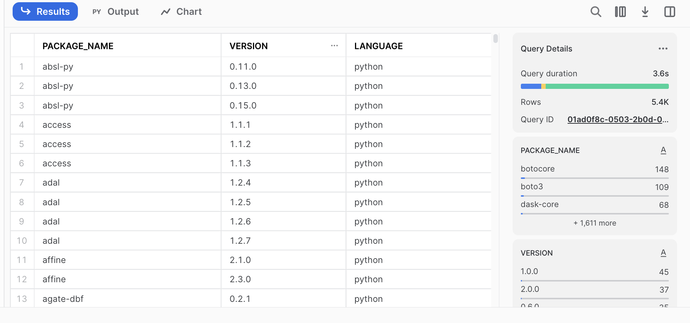
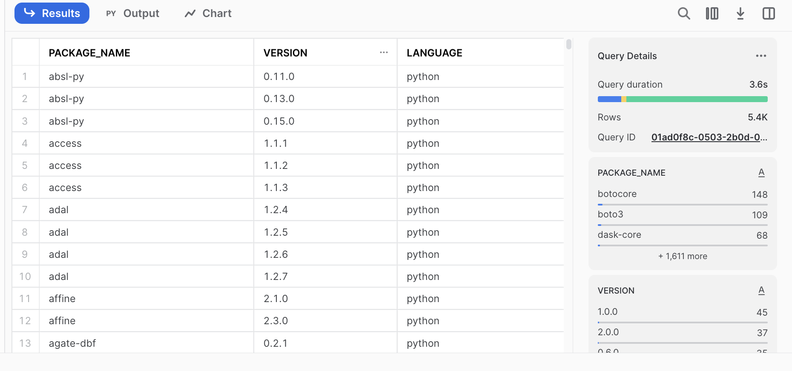 - Delete the sample boilerplate code in the new python worksheet. Copy the following code into the python worksheet to get a 5 year moving average of Formula 1 laps:
# The Snowpark package is required for Python Worksheets. # You can add more packages by selecting them using the Packages control and then importing them. import snowflake.snowpark as snowpark import pandas as pd def main(session: snowpark.Session): # Your code goes here, inside the "main" handler. tableName = 'MRT_LAP_TIMES_YEARS' dataframe = session.table(tableName) lap_times = dataframe.to_pandas() # print table print(lap_times) # describe the data lap_times["LAP_TIME_SECONDS"] = lap_times["LAP_TIME_MILLISECONDS"]/1000 lap_time_trends = lap_times.groupby(by="RACE_YEAR")["LAP_TIME_SECONDS"].mean().to_frame() lap_time_trends.reset_index(inplace=True) lap_time_trends["LAP_MOVING_AVG_5_YEARS"] = lap_time_trends["LAP_TIME_SECONDS"].rolling(5).mean() lap_time_trends.columns = lap_time_trends.columns.str.upper() final_df = session.create_dataframe(lap_time_trends) # Return value will appear in the Results tab. return final_df
If you have workloads that have large memory requirements such as deep learning models consider using Snowpark dataframes and Snowpark-optimized warehouses that are specifically engineered to handle these types of compute intensive workloads!
- Your result should have three columns:
race_year,lap_time_seconds, andlap_moving_avg_5_years.
We were able to quickly calculate a 5 year moving average using python instead of having to sort our data and worry about lead and lag SQL commands. Clicking on the Chart button next to Results, we can see that lap times seem to be trending down with small fluctuations until 2010 and 2011 which coincides with drastic Formula 1 regulation changes including cost-cutting measures and in-race refueling bans. So we can safely ascertain lap times are not consistently decreasing.
Now that we've created this dataframe and lap time trend insight, what do we do when we want to scale it? In the next section we'll be learning how to do this by leveraging python transformations in dbt Cloud.
Our first dbt python model for lap time trends
Let's get our lap time trends in our data pipeline so we have this data frame to leverage as new data comes in. The syntax of of a dbt python model is a variation of our development code in the python worksheet so we'll be explaining the code and concepts more.
You might be wondering: How does this work?
Or more specifically: How is dbt able to send a python command over to a Snowflake runtime executing python?
At a high level, dbt executes python models as stored procedures in Snowflake, via Snowpark for python.
Snowpark for python and dbt python architecture:
- Open your dbt Cloud browser tab.
- Create a new file under the models > marts > aggregates directory called
agg_lap_times_moving_avg.py. - Copy the following code in and Save the file:
import pandas as pd def model(dbt, session): # dbt configuration dbt.config(packages=["pandas"]) # get upstream data lap_times = dbt.ref("mrt_lap_times_years").to_pandas() # describe the data lap_times["LAP_TIME_SECONDS"] = lap_times["LAP_TIME_MILLISECONDS"]/1000 lap_time_trends = lap_times.groupby(by="RACE_YEAR")["LAP_TIME_SECONDS"].mean().to_frame() lap_time_trends.reset_index(inplace=True) lap_time_trends["LAP_MOVING_AVG_5_YEARS"] = lap_time_trends["LAP_TIME_SECONDS"].rolling(5).mean() lap_time_trends.columns = lap_time_trends.columns.str.upper() return lap_time_trends.round(1) - Let's break down what this code is doing:
- First, we are importing the Python libraries that we are using. This is similar to a dbt package, but our Python libraries do not persist across the entire project.
- Defining a function called
modelwith the parameterdbtandsession. We'll define these more in depth later in this section. You can see that all the data transformation happening is within the body of themodelfunction that thereturnstatement is tied to. - Then, within the context of our dbt model library, we are passing in a configuration of which packages we need using
dbt.config(packages=["pandas"]). - Use the
.ref()function to retrieve the upstream data framemrt_lap_times_yearsthat we created in our last step using SQL. We cast this to a pandas dataframe (by default it's a Snowpark Dataframe). - From there we are using python to transform our dataframe to give us a rolling average by using
rolling()overRACE_YEAR. - Convert our Python column names to all uppercase using
.upper(), so Snowflake recognizes them. This has been a frequent "gotcha" for folks using dbt python so we call it out here. We won't go as in depth for our subsequent scripts, but will continue to explain at a high level what new libraries, functions, and methods are doing.
- Create the model in our warehouse by clicking Build.
- We can't preview Python models directly, so let's open a new file using the + button or the Control-N shortcut to create a new scratchpad:
select * from {{ ref('agg_lap_times_moving_avg') }} - Preview the output. It should look the same as our snowflake python worksheet:

- We can see we have the same results from our python worksheet development as we have in our codified dbt python project.
The dbt model, .source(), .ref() and .config() functions
Let's take a step back before starting machine learning to both review and go more in-depth at the methods that make running dbt python models possible. If you want to know more outside of this lab's explanation read the documentation on Python models here.
- def model(dbt, session). For starters, each Python model lives in a .py file in your models/ folder. It defines a function named
model(), which takes two parameters:- dbt — A class compiled by dbt Core, unique to each model, enables you to run your Python code in the context of your dbt project and DAG.
- session — A class representing your data platform's connection to the Python backend. The session is needed to read in tables as DataFrames and to write DataFrames back to tables. In PySpark, by convention, the SparkSession is named spark, and available globally. For consistency across platforms, we always pass it into the model function as an explicit argument called session.
- The
model()function must return a single DataFrame. On Snowpark (Snowflake), this can be a Snowpark or pandas DataFrame. .source()and.ref()functions. Python models participate fully in dbt's directed acyclic graph (DAG) of transformations. If you want to read directly from a raw source table, usedbt.source(). We saw this in our earlier section using SQL with the source function. These functions have the same execution, but with different syntax. Use thedbt.ref()method within a Python model to read data from other models (SQL or Python). These methods return DataFrames pointing to the upstream source, model, seed, or snapshot..config(). Just like SQL models, there are three ways to configure Python models:- In a dedicated
.ymlfile, within themodels/directory - Within the model's
.pyfile, using thedbt.config()method - Calling the
dbt.config()method will set configurations for your model within your.pyfile, similar to the{{ config() }} macroin.sqlmodel files. There's a limit to how complex you can get with thedbt.config()method. It accepts only literal values (strings, booleans, and numeric types). Passing another function or a more complex data structure is not possible. The reason is that dbt statically analyzes the arguments to.config()while parsing your model without executing your Python code. If you need to set a more complex configuration, we recommend you define it using the config property in a YAML file. Learn more about configurations here.def model(dbt, session): # setting configuration dbt.config(materialized="table")
- In a dedicated
- Commit and sync so our project contains our
agg_lap_times_moving_avg.pymodel, add a commit message and Commit changes.
Now that we understand how to create python transformations we can use them to prepare train machine learning models and generate predictions!
In upstream parts of our data lineage we had dedicated steps and data models to cleaning, encoding, and splitting out the data into training and testing datasets. We do these steps to ensure:
- We have features for prediction and the predictions aren't erroneous (we filtered our drivers that weren't active drivers present at 2020) — review
ml_data_prep.py - Representing (encoding) non-numerical data such as categorical and text variables as numbers — review
covariate_encoding.py - Splitting our data into a training and testing set and a hold out set — review
training_testing_dataset.pyandhold_out_dataset_for_prediction.py
There are 3 areas to break down as we go since we are working at the intersection all within one model file:
- Machine Learning
- Snowflake and Snowpark
- dbt Python models
Training and saving a machine learning model
- Project organization remains key, under the
mlfolder make a new subfolder calledtraining_and_prediction. - Now create a new file called
train_model_to_predict_position.py
- Copy and save the following code (make sure copy all the way to the right). You can also copy it from our demo repo by clicking on this link and using Ctrl/Cmd+A.
import snowflake.snowpark.functions as F from sklearn.model_selection import train_test_split import pandas as pd from sklearn.metrics import confusion_matrix, balanced_accuracy_score import io from sklearn.linear_model import LogisticRegression from joblib import dump, load import joblib import logging import sys from joblib import dump, load logger = logging.getLogger("mylog") def save_file(session, model, path, dest_filename): input_stream = io.BytesIO() joblib.dump(model, input_stream) session._conn.upload_stream(input_stream, path, dest_filename) return "successfully created file: " + path def model(dbt, session): dbt.config( packages = ['numpy','scikit-learn','pandas','numpy','joblib','cachetools'], materialized = "table", tags = "train" ) # Create a stage in Snowflake to save our model file session.sql('create or replace stage MODELSTAGE').collect() #session._use_scoped_temp_objects = False version = "1.0" logger.info('Model training version: ' + version) # read in our training and testing upstream dataset test_train_df = dbt.ref("training_testing_dataset") # cast snowpark df to pandas df test_train_pd_df = test_train_df.to_pandas() target_col = "POSITION_LABEL" # split out covariate predictors, x, from our target column position_label, y. split_X = test_train_pd_df.drop([target_col], axis=1) split_y = test_train_pd_df[target_col] # Split out our training and test data into proportions X_train, X_test, y_train, y_test = train_test_split(split_X, split_y, train_size=0.7, random_state=42) train = [X_train, y_train] test = [X_test, y_test] # now we are only training our one model to deploy # we are keeping the focus on the workflows and not algorithms for this lab! model = LogisticRegression() # fit the preprocessing pipeline and the model together model.fit(X_train, y_train) y_pred = model.predict_proba(X_test)[:,1] predictions = [round(value) for value in y_pred] balanced_accuracy = balanced_accuracy_score(y_test, predictions) # Save the model to a stage save_file(session, model, "@MODELSTAGE/driver_position_"+version, "driver_position_"+version+".joblib" ) logger.info('Model artifact:' + "@MODELSTAGE/driver_position_"+version+".joblib") # Take our pandas training and testing dataframes and put them back into snowpark dataframes snowpark_train_df = session.write_pandas(pd.concat(train, axis=1, join='inner'), "train_table", auto_create_table=True, create_temp_table=True) snowpark_test_df = session.write_pandas(pd.concat(test, axis=1, join='inner'), "test_table", auto_create_table=True, create_temp_table=True) # Union our training and testing data together and add a column indicating train vs test rows return snowpark_train_df.with_column("DATASET_TYPE", F.lit("train")).union(snowpark_test_df.with_column("DATASET_TYPE", F.lit("test"))) - Use the UI Build our
train_model_to_predict_positionmodel. - Breaking down our Python script:
- We're importing some helpful libraries.
- Defining a function called
save_file()that takes four parameters:session,model,pathanddest_filenamethat will save our logistic regression model file.session— an object representing a connection to Snowflake.model— when models are trained they are saved in memory, we will be using the model name to save our in-memory model into a joblib file to retrieve to call new predictions later.path— a string representing the directory or bucket location where the file should be saved.dest_filename— a string representing the desired name of the file.
- Creating our dbt model
- Within this model we are creating a stage called
MODELSTAGEto place our logistic regressionjoblibmodel file. This is really important since we need a place to keep our model to reuse and want to ensure it's there. When using Snowpark commands, it's common to see the.collect()method to ensure the action is performed. Think of the session as our "start" and collect as our "end" when working with Snowpark (you can use other ending methods other than collect). - Using
.ref()to connect into ourtraining_and_test_datasetmodel. - Now we see the machine learning part of our analysis:
- Create new dataframes for our prediction features from our target variable
position_label. - Split our dataset into 70% training (and 30% testing), train_size=0.7 with a
random_statespecified to have repeatable results. - Specify our model is a logistic regression.
- Fit our model. In a logistic regression this means finding the coefficients that will give the least classification error.
- Round our predictions to the nearest integer since logistic regression creates a probability between for each class and calculate a balanced accuracy to account for imbalances in the target variable.
- Create new dataframes for our prediction features from our target variable
- Within this model we are creating a stage called
- Right now our model is only in memory, so we need to use our nifty function
save_fileto save our model file to our Snowflake stage. We save our model as a joblib file so Snowpark can easily call this model object back to create predictions. We really don't need to know much else as a data practitioner unless we want to. It's worth noting that joblib files aren't able to be queried directly by SQL. To do this, we would need to transform the joblib file to an SQL queryable format such as JSON or CSV (out of scope for this workshop). - Finally we want to return our dataframe, but create a new column indicating what rows were used for training and those for training.
- Defining a function called
- Viewing our output of this model:

- Let's pop back over to Snowflake. To check that our logistic regression model has been stored in our
MODELSTAGEopen a SQL Worksheet and use the query below to list objects in your modelstage. Make sure you are in the correct database and development schema to view your stage (this should bePC_DBT_DBand your dev schema - for exampledbt_hwatson).list @modelstage

- To investigate the commands run as part of
train_model_to_predict_position.pyscript, navigate to Snowflake query history to view it Home button > Activity > Query History. We can view the portions of query that we wrote such ascreate or replace stage MODELSTAGE, but we also see additional queries that Snowflake uses to interpret python code.
Let's use our new trained model to create predictions!
Predicting on new data
It's time to use that 2020 data we held out to make predictions on!
- Create a new file under
ml/training_and_predictioncalledapply_prediction_to_position.pyand copy and save the following code (You can also copy it from our demo repo by clicking on this link and using Ctrl/Cmd+A.):import logging import joblib import pandas as pd import os from snowflake.snowpark import types as T DB_STAGE = 'MODELSTAGE' version = '1.0' # The name of the model file model_file_path = 'driver_position_'+version model_file_packaged = 'driver_position_'+version+'.joblib' # This is a local directory, used for storing the various artifacts locally LOCAL_TEMP_DIR = f'/tmp/driver_position' DOWNLOAD_DIR = os.path.join(LOCAL_TEMP_DIR, 'download') TARGET_MODEL_DIR_PATH = os.path.join(LOCAL_TEMP_DIR, 'ml_model') TARGET_LIB_PATH = os.path.join(LOCAL_TEMP_DIR, 'lib') # The feature columns that were used during model training # and that will be used during prediction FEATURE_COLS = [ "RACE_YEAR" ,"RACE_NAME" ,"GRID" ,"CONSTRUCTOR_NAME" ,"DRIVER" ,"DRIVERS_AGE_YEARS" ,"DRIVER_CONFIDENCE" ,"CONSTRUCTOR_RELAIBLITY" ,"TOTAL_PIT_STOPS_PER_RACE"] def register_udf_for_prediction(p_predictor ,p_session ,p_dbt): # The prediction udf def predict_position(p_df: T.PandasDataFrame[int, int, int, int, int, int, int, int, int]) -> T.PandasSeries[int]: # Snowpark currently does not set the column name in the input dataframe # The default col names are like 0,1,2,... Hence we need to reset the column # names to the features that we initially used for training. p_df.columns = [*FEATURE_COLS] # Perform prediction. this returns an array object pred_array = p_predictor.predict(p_df) # Convert to series df_predicted = pd.Series(pred_array) return df_predicted # The list of packages that will be used by UDF udf_packages = p_dbt.config.get('packages') predict_position_udf = p_session.udf.register( predict_position ,name=f'predict_position' ,packages = udf_packages ) return predict_position_udf def download_models_and_libs_from_stage(p_session): p_session.file.get(f'@{DB_STAGE}/{model_file_path}/{model_file_packaged}', DOWNLOAD_DIR) def load_model(p_session): # Load the model and initialize the predictor model_fl_path = os.path.join(DOWNLOAD_DIR, model_file_packaged) predictor = joblib.load(model_fl_path) return predictor # ------------------------------- def model(dbt, session): dbt.config( packages = ['snowflake-snowpark-python' ,'scipy','scikit-learn' ,'pandas' ,'numpy'], materialized = "table", tags = "predict" ) session._use_scoped_temp_objects = False download_models_and_libs_from_stage(session) predictor = load_model(session) predict_position_udf = register_udf_for_prediction(predictor, session ,dbt) # Retrieve the data, and perform the prediction hold_out_df = (dbt.ref("hold_out_dataset_for_prediction") .select(*FEATURE_COLS) ) trained_model_file = dbt.ref("train_model_to_predict_position") # Perform prediction. new_predictions_df = hold_out_df.withColumn("position_predicted" ,predict_position_udf(*FEATURE_COLS) ) return new_predictions_df - Use the UI Build our
apply_prediction_to_positionmodel. - Commit and sync our changes to keep saving our work as we go using the commit message
logistic regression model training and applicationbefore moving on.

- At a high level in this script, we are:
- Retrieving our staged logistic regression model
- Loading the model in
- Placing the model within a user defined function (UDF) to call in line predictions on our driver's position
- At a more detailed level:
- Import our libraries.
- Create variables to reference back to the
MODELSTAGEwe just created and stored our model to. - The temporary file paths we created might look intimidating, but all we're doing here is programmatically using an initial file path and adding to it to create the following directories:
- LOCAL_TEMP_DIR ➡️ /tmp/driver_position
- DOWNLOAD_DIR ➡️ /tmp/driver_position/download
- TARGET_MODEL_DIR_PATH ➡️ /tmp/driver_position/ml_model
- TARGET_LIB_PATH ➡️ /tmp/driver_position/lib
- Provide a list of our feature columns that we used for model training and will now be used on new data for prediction.
- Next, we are creating our main function
register_udf_for_prediction(p_predictor ,p_session ,p_dbt):. This function is used to register a user-defined function (UDF) that performs the machine learning prediction. It takes three parameters:p_predictoris an instance of the machine learning model,p_sessionis an instance of the Snowflake session, andp_dbtis an instance of the dbt library. The function creates a UDF namedpredict_positionwhich takes a pandas dataframe with the input features and returns a pandas series with the predictions. - ⚠️ Pay close attention to the whitespace here. We are using a function within a function for this script.
- We have 2 simple functions that are programmatically retrieving our file paths to first get our stored model out of our
MODELSTAGEand downloaded into the sessiondownload_models_and_libs_from_stageand then to load the contents of our model in (parameters) inload_modelto use for prediction. - Take the model we loaded in and call it
predictorand wrap it in a UDF. - Return our dataframe with both the features used to predict and the new label.
🧠 Another way to read this script is from the bottom up. This can help us progressively see what is going into our final dbt model and work backwards to see how the other functions are being referenced.
- Let's take a look at our predicted position alongside our feature variables. Open a new scratchpad and use the following query. I chose to order by the prediction of who would obtain a podium position:
select * from {{ ref('apply_prediction_to_position') }} order by position_predicted
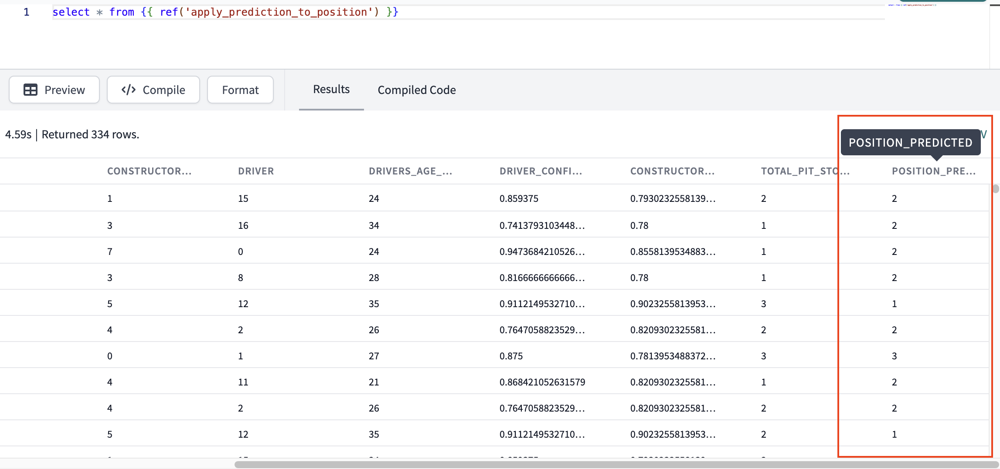
We can see that we created predictions in our final dataset for each result.
- Run a fresh
dbt buildin the command bar to ensure our pipeline is working end to end. This will take a few minutes, (3 minutes and 2.4 seconds to be exact) so it's not a bad time to stretch (we know programmers slouch). This runtime is pretty performant since we're using an X-Smalll warehouse. If you want to speed up the pipeline, you can increase the warehouse size (good for SQL) or use a Snowpark-optimized Warehouses (good for Python)
Committing all development work
Before we jump into deploying our code, let's have a quick primer on environments. Up to this point, all of the work we've done in the dbt Cloud IDE has been in our development environment, with code committed to a feature branch and the models we've built created in our development schema in Snowflake as defined in our Development environment connection. Doing this work on a feature branch, allows us to separate our code from what other coworkers are building and code that is already deemed production ready. Building models in a development schema in Snowflake allows us to separate the database objects we might still be modifying and testing from the database objects running production dashboards or other downstream dependencies. Together, the combination of a Git branch and Snowflake database objects form our environment.
Now that we've completed applying prediction, we're ready to deploy our code from our development environment to our production environment and this involves two steps:
- Promoting code from our feature branch to the production branch in our repository.
- Generally, the production branch is going to be named your main branch and there's a review process to go through before merging code to the main branch of a repository. Here we are going to merge without review for ease of this workshop.
- Deploying code to our production environment.
- Once our code is merged to the main branch, we'll need to run dbt in our production environment to build all of our models and run all of our tests. This will allow us to build production-ready objects into our production environment in Snowflake. Luckily for us, the Partner Connect flow has already created our deployment environment and job to facilitate this step.
- Before getting started, let's make sure that we've committed all of our work to our feature branch. Our working branch,
snowpark-python-workshop, should be clean. If for some reason you do still have work to commit, you'll be able to select the Commit and sync, provide a message, and then select Commit changes again. - Once all of your work is committed, the git workflow button will now appear as Create pull request.

- This will bring you to your GitHub repo. This will show the commits that encompass all changes made since the last pull request. Since we only added new files we are able to merge into
mainwithout conflicts. Click Create pull request. 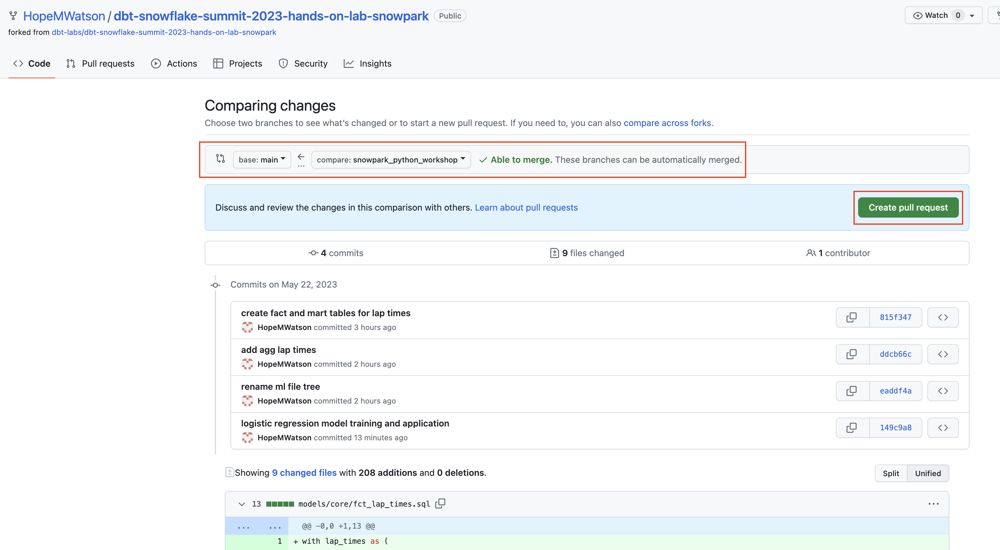 - This goes to a Open a pull request page. Usually, when merging in a pull request (PR) we would create descriptions and motivations for the work being completed, validation our models work (like a fresh dbt build), and note changes to exisiting models (we only created new models and didn't alter existing ones). Then typically your teammates will review, comment, and independently test out the code on your branch. dbt has created a pull request template to make PRs as efficient and scalable to your analytics workflow.
The template is also located in our root directory under .github in the file pull_request_template.md. When a PR is opened, the template will automatically be pulled in for you to fill out. For the workshop we'll do an abbreviated version of this for example. If you'd like you can just add a quick comment followed by Merge pull request since we're doing a workshop in an isolated Snowflake trial account (and won't break anything).
Our abbreviated PR template written markdown: 
PR preview: 
- Our PR is looking good. Let's Merge pull request.

- Then click Confirm merge.

- It's best practice to keep your repo clean by deleting your working branch once merged into main. You can always restore it later, for now Delete Branch. We're all done in GitHub for today! 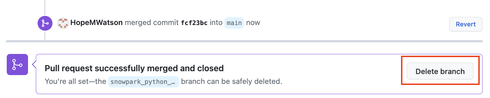
- Head back over to your dbt Cloud browser tab. Under Version Control select Pull from "main". If you don't see this, refresh your browser tab and it should appear.

- Select Change branch to your main branch that now appears as (ready-only).


- Finally, to bring our changes from our
mainbranch in GitHub, select Pull from remote
- Now that all of our development work has been merged to the main branch, we can build our deployment job. Given that our production environment and production job were created automatically for us through Partner Connect, all we need to do here is update some default configurations to meet our needs.
- In the menu, select Deploy > Environments

Setting your production schema
- You should see two environments listed and you'll want to select the Deployment environment then Settings to modify it.
- Before making any changes, let's touch on what is defined within this environment. The Snowflake connection shows the credentials that dbt Cloud is using for this environment and in our case they are the same as what was created for us through Partner Connect. Our deployment job will build in our
PC_DBT_DBdatabase and use the default Partner Connect role and warehouse to do so. The deployment credentials section also uses the info that was created in our Partner Connect job to create the credential connection. However, it is using the same default schema that we've been using as the schema for our development environment. - Let's update the schema to create a new schema specifically for our production environment. Click Edit to allow you to modify the existing field values. Navigate to Deployment Credentials > schema.
- Update the schema name to production. Remember to select Save after you've made the change.

- By updating the schema for our production environment to production, it ensures that our deployment job for this environment will build our dbt models in the production schema within the
PC_DBT_DBdatabase as defined in the Snowflake Connection section.
Creating multiple jobs
In machine learning you rarely want to retrain your model as often as you want new predictions. Model training is compute intensive and requires person time for development and evaluation, while new predictions can run through an existing model to gain insights about drivers, customers, events, etc. This problem can be tricky, but dbt Cloud makes it easy by: automatically creating dependencies from your code and making setup for environments and jobs simple.
With this in mind we're going to have two jobs:
- One job that initially builds or retrains our machine learning model. This job will run all the models in our project, and was already created through partner connect.
- Another job that focuses on creating predictions from the existing machine learning model. This job will exclude model training by using syntax to exclude running
train_model_to_predict_position.py. This second job requires that you have already created a trained model in a previous run and that it is in your MODELSTAGE area.
- Let's look at over to our production job created by partner connect. Click on the deploy tab again and then select Jobs.
 You should see an existing and preconfigured Partner Connect Trial Job.
You should see an existing and preconfigured Partner Connect Trial Job. 
- Similar to the environment, click on the job, then select Settings to modify it. Let's take a look at the job to understand it before making changes.

- The Environment section is what connects this job with the environment we want it to run in. This job is already defaulted to use the Deployment environment that we just updated and the rest of the settings we can keep as is.
- The Execution settings section gives us the option to generate docs, run source freshness, and defer to a previous run state. For the purposes of our lab, we're going to keep these settings as is as well and stick with just generating docs.
- The Commands section is where we specify exactly which commands we want to run during this job. The command
dbt buildwill run and test all the models our in project. We'll keep this as is. - Finally, we have the Triggers section, where we have a number of different options for scheduling our job. Given that our data isn't updating regularly here and we're running this job manually for now, we're also going to leave this section alone.
- So, what are we changing then? The job name and commands!
- Click Edit to allow you to make changes. Then update the name of the job to Machine learning initial model build or retraining this may seem like a mouthful, but naming with an entire data team is helpful (or our future selves after not looking at a project for 3 months).
- Go to Execution Settings > Commands. Click Add Command and input
dbt build. 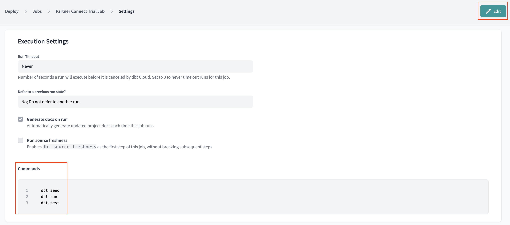 - Delete the existing commands
dbt seed,dbt run, anddbt test. Together they make up the functions ofdbt buildso we are simplifying our code.

- After that's done, DON'T FORGET CLICK Save.
- Now let's go to run our job. Clicking on the job name in the path at the top of the screen will take you back to the job run history page where you'll be able to click Run to kick off the job. In total we produced 106 entities: 14 view models, 67 tests, 24 table models, 1 incremental model.

- Let's go over to Snowflake to confirm that everything built as expected in our production schema. Refresh the database objects in your Snowflake account and you should see the production schema now within our default Partner Connect database. If you click into the schema and everything ran successfully, you should be able to see all of the models we developed.

- Go back to dbt Cloud and navigate to Deploy > Jobs > Create Job. Edit the following job settings:
- Set the General Settings > Job Name to Prediction on data with existing model
- Set the Execution Settings > Commands to
dbt build --exclude train_model_to_predict_position - We can keep all other job settings the same
- Save your job settings
- Run your job using Run Now. Remember the only difference between our first job and this job is we are excluding model retraining. So we will have one less model in our outputs. We can confirm this in our run steps.
- Open the job and go to Run Steps > Invoke. In our job details we can confirm one less entity (105 instead of 106).
That wraps all of our hands on the keyboard time for today!
Fantastic! You've finished the workshop! We hope you feel empowered in using both SQL and Python in your dbt Cloud workflows with Snowflake. Having a reliable pipeline to surface both analytics and machine learning is crucial to creating tangible business value from your data.
To learn more about how to combine Snowpark and dbt Cloud for smarter production, visit our page where you can book a demo to talk to an expert and try our quickstart focusing on dbt basics such as setup, connections, tests, and documentation.
Finally, for more help and information join our dbt community Slack which contains more than 65,000 data practitioners today. We have a dedicated slack channel #db-snowflake to Snowflake related content. Happy dbt'ing!